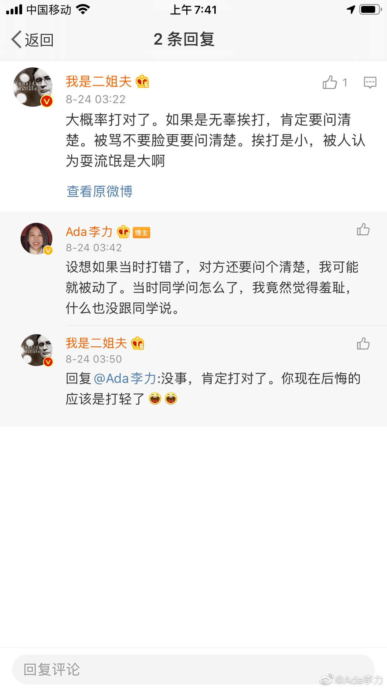

#不明所以#
第一次遇到性骚扰是少女时期。
"中学时元宵节看灯，人挤人，突然被一只手摸了档部，即使在懵逼中，还是照着离我最近的某男脸上挥了一拳，他质问时，我骂：不要脸。他自己就走掉了。 至今不知道打得是不是手贱那人，但打出去就是对的。"
现在回想起来，我的攻击性是天生和本能的，那个时候虽然还不知道性骚扰这个名词，但被人摸了隐私部位，第一感觉是不舒服和暴怒，而本能是谁让我不舒服，我就让对方付出代价，所以会即刻出拳。
打完拳后，我其实觉得算扯平了，这个事情并没给我留下什么阴影。
吊诡的是，成年后再遇到性骚扰，我就没了这种本能反应。教育真是强有力的驯化方式，尤其是会把女性都驯化成没有了攻击性的蠢货。
第一次遇到性骚扰是少女时期。
"中学时元宵节看灯，人挤人，突然被一只手摸了档部，即使在懵逼中，还是照着离我最近的某男脸上挥了一拳，他质问时，我骂：不要脸。他自己就走掉了。 至今不知道打得是不是手贱那人，但打出去就是对的。"
现在回想起来，我的攻击性是天生和本能的，那个时候虽然还不知道性骚扰这个名词，但被人摸了隐私部位，第一感觉是不舒服和暴怒，而本能是谁让我不舒服，我就让对方付出代价，所以会即刻出拳。
打完拳后，我其实觉得算扯平了，这个事情并没给我留下什么阴影。
吊诡的是，成年后再遇到性骚扰，我就没了这种本能反应。教育真是强有力的驯化方式，尤其是会把女性都驯化成没有了攻击性的蠢货。
- 